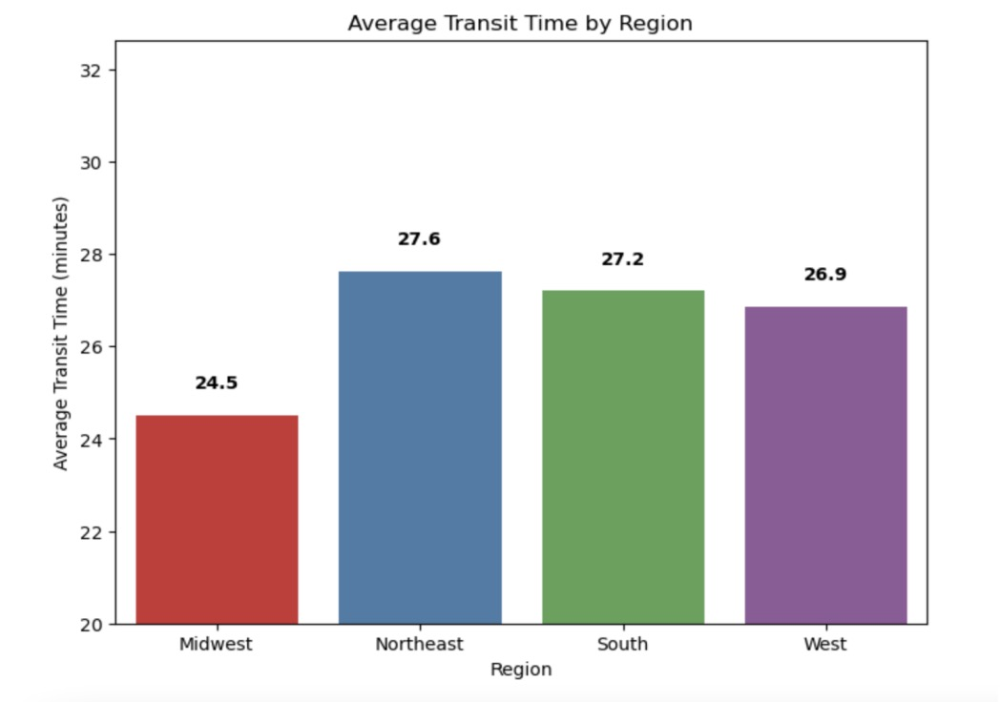
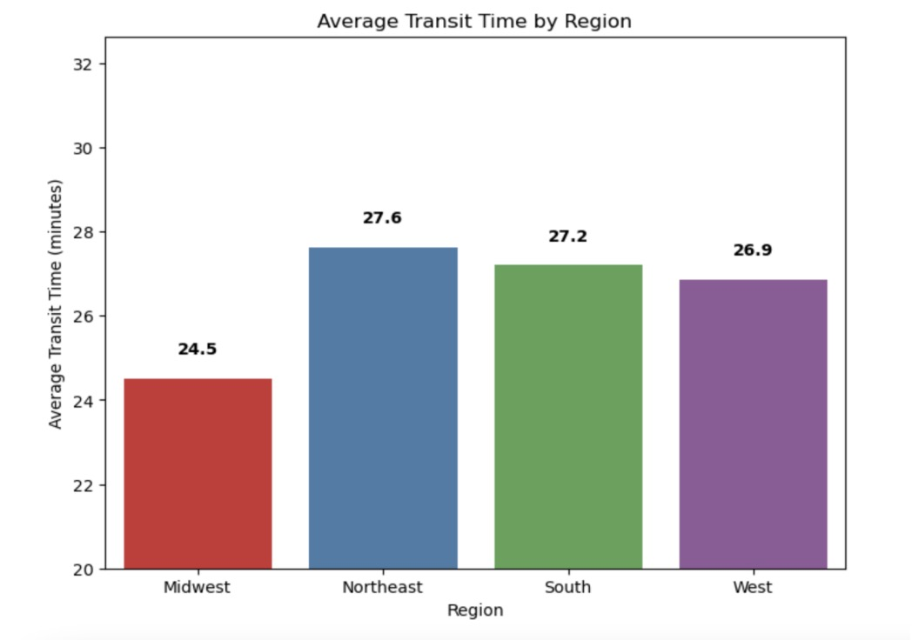
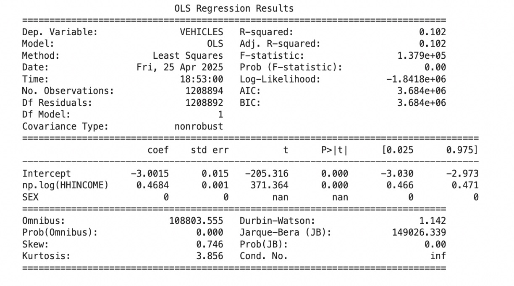
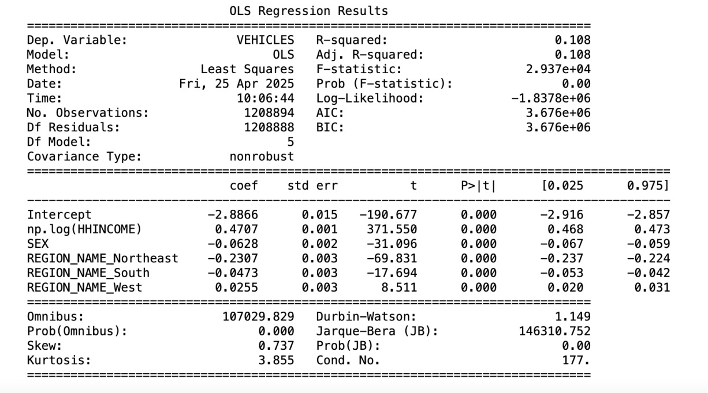
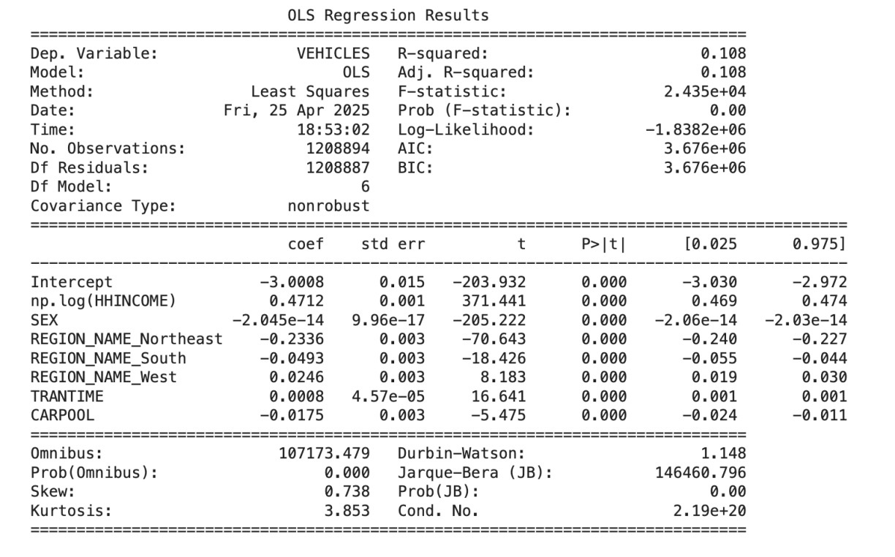
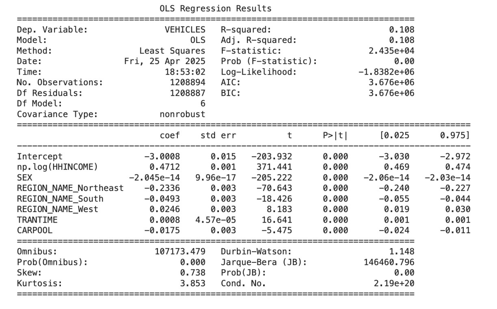

Statistical Analysis of U.S. Commuting Behavior
1. Introduction and Motivation
Commuting is a daily necessity that is often shaped by education, income, and social status, all of which can influence transportation choices and travel time. Higher-income and well-educated individuals typically have more flexibility in selecting housing and commuting modes, whereas lower-income workers often face longer, less efficient commutes due to affordability constraints.
We aim to gain a deeper understanding of these disparities, as this knowledge is essential for policymakers and urban planners seeking to enhance transit equity and economic mobility. In addition, we hope to explore how these socioeconomic factors shape commuting behaviors and have a broader impact on urban accessibility, as well as how certain commuting behaviors, such as vehicle purchases and carpooling, relate to the sustainability efforts of each individual.
2. Methods
To ensure robust results, the analysis followed a structured econometric workflow:
3. Exploratory Data Analysis

- Income Distribution:The income distribution exhibits a bimodal pattern with concentration in two primary ranges.
- Education Distribution: Education attainment shows a right-skewed distribution with high frequency at lower education levels.
- Transit Time Distribution:Transit times follow a multimodal distribution with peak concentrations at 25-30 units and 35-40 units.
- Population Density: Population density shows an exponential decay pattern with exceptionally high concentration in low-density areas.
- Vehicles per Household: Vehicle ownership displays a unimodal distribution peaking at 2 vehicles per household.
- Carpool Status: The carpool adoption rate shows 88.8% of observations fall in the non-carpool category while only 11.2% represent carpool arrangements, indicating carpooling remains a minority transportation in the US.
We computed the Pearson correlation matrix for six selected variables related to household characteristics and transportation, and visualized the correlations using a heatmap.
The heatmap reveals a positive correlation between vehicle ownership and both household income and commuting time, suggesting that higher-income households and those with longer commutes tend to own more vehicles. Conversely, vehicle ownership is negatively correlated with education level and population density, implying that individuals with more education or those living in denser areas may rely less on personal vehicles.
 

We categorized the Region variable into four groups: Northeast, Midwest, South, and West. Histogram analysis suggests that individuals in the South and West are more likely to carpool, while those in the Northeast and South tend to have longer commute times. These patterns are consistent with observed differences in population density across regions. However, due to multicollinearity concerns, we excluded DENSITY from the regression models to avoid distortion in coefficient estimates.

4. Regression Models and Results
  

- Income Effect: Model 1 includes log household income and a binary variable for sex. The coefficient on log(HHINCOME) is 0.467 (p < 0.01), indicating that a 1% increase in income is associated with a 0.00467 increase in vehicle ownership. The coefficient on SEX is -0.064 (p < 0.01), suggesting that female-headed households tend to own fewer vehicles, holding income constant.
- Model 2 adds region fixed effects (with the Midwest as the reference group). Compared to the Midwest, households in the Northeast and South own fewer vehicles (-0.231 and -0.047), while those in the West own slightly more (+0.026). All coefficients are significant at the 1% level.
- Model 3 introduces commute time (TRANTIME), which enters positively and significantly (0.0006, p < 0.01), implying that longer commutes are associated with slightly higher vehicle ownership.
- Model 4 incorporates all previous variables plus a carpooling indicator (CARPOOL). The coefficient on CARPOOL is negative (-0.0046) but not statistically significant (p = 0.145), indicating that carpooling does not meaningfully predict vehicle ownership after controlling for other factors.
- Multicollinearity diagnostics show that most Variance Inflation Factors (VIFs) are below the standard threshold of 10, though log(HHINCOME) and SEX show moderately elevated VIFs (14.19 and 9.22), indicating some collinearity but not enough to undermine the model. Conclusion: Household income, regional location, and commuting patterns are significant predictors of vehicle ownership, while carpooling shows no robust effect.
5. Analysis and Recommendations
Based on the empirical evidence, the following recommendations are proposed for urban policymakers:
- Policy Targeting Low-Income Households:Since income is a key driver of vehicle ownership, transportation policies—such as vehicle subsidies, tax credits, or public transit investments—should especially consider the needs of low-income households who may be under-motorized and face mobility constraints.
- Support for Female Respondents: The consistent negative relationship between being female and vehicle ownership suggests potential gender disparities in transportation access. Programs aimed at improving mobility for women, such as safe and affordable public transit or shared mobility services, may help close this gap.
Given the big regional differences, transportation planning should be tailored to local contexts. For example, promoting car alternatives (e.g., transit, biking) in the Northeast may be more feasible than in the South or Midwest. - Commute-Responsive Policies: While commute time has a small effect, long commuting households may benefit from targeted incentives for efficient vehicle use, carpooling platforms, or telecommuting support. rather than ownership counts.
- Reassessing Carpooling's Role: Since carpooling is not significantly associated with fewer vehicles, policymakers should reevaluate its effectiveness as a tool for reducing household vehicle counts. Efforts might focus instead on reducing vehicle miles traveled (VMT) rather than ownership.